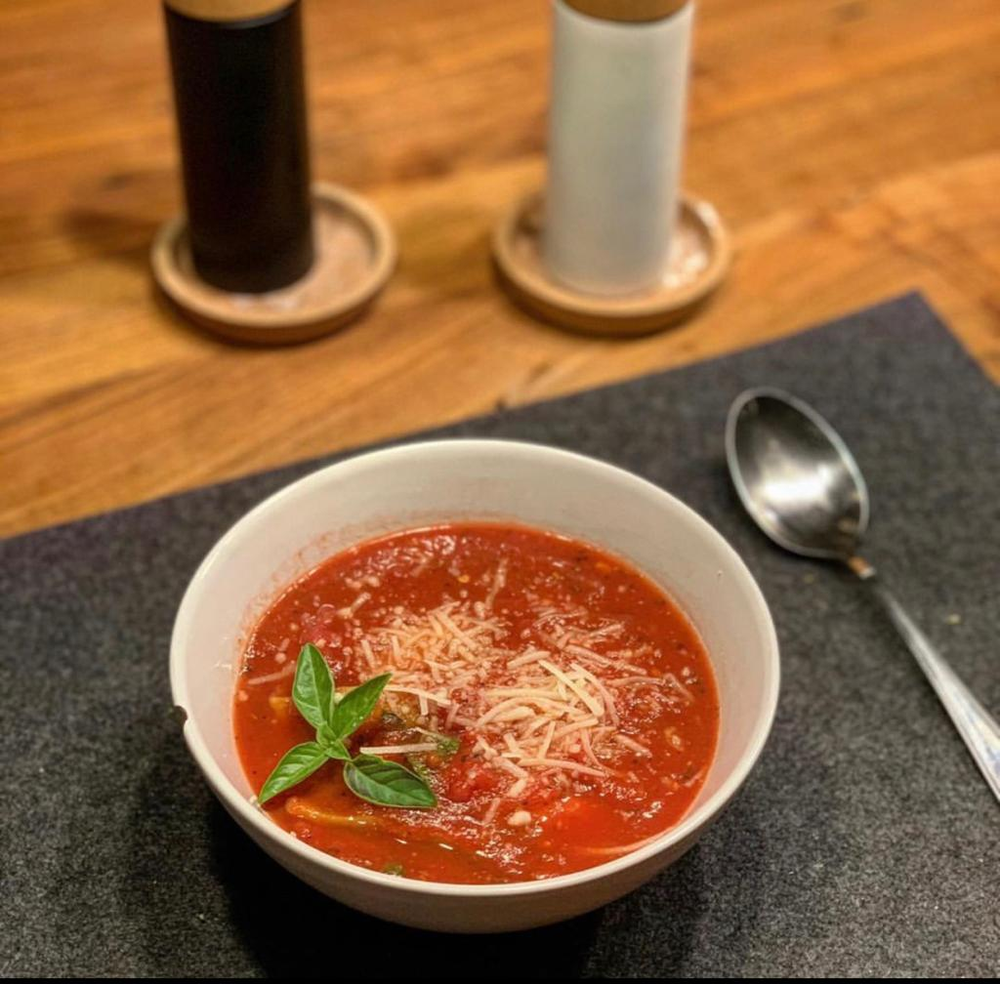

Do you want to make the best tomato soup?
There is a huge variety of recipes for tomato soup. All of them contain the primary ingredient of tomatoes. Tomato soup may be served hot or cold in a bowl, and may be made in a variety of ways. Some topings may include: crutons or sour cream. In the United States, it is often served with crackers. Around the World there are a variety of ways to make tomato soup. In Spain, there is a type of tomato soup called Gazpacho. It is served cold and it is originally from the region of Andalucía in southern Spain. Gazpacho is widely consumed in Spanish cuisine, as well as in neighboring Portugal, where it is known as gaspacho. Gazpacho is mostly consumed during the summer months, due to its refreshing qualities and cold serving temperature. Many variations of gazpacho exist.
Steps
1. Have all ingredients ready to start the recipe.

2. Fill a pot with water and put the tomatoes to a boil. After 1 minute, take them out and put them in cold water.

3. When the tomatoes are out of the water, remove the skin and chop them into small cubes.

4. Then chop the onion, pepper and garlic very small and sauté them in a pan with olive oil. Cook them until golden brown.

5. Add the chopped tomatoes, bay leaf, and a pinch of salt and pepper

6. Add two glasses of water and lower the heat to half and let it boil for 30 minutes. Then it is ready to eat!